1.きみはだれ？
はじめまして、ゆいです。ねこが好きです。
パソコンをつくったり壊したりして遊んだり、ちょっとした電子工作とかやったりしています。
個人サイトが(一応)動くようになったので、UEC Advent Calendarに参加してみました。
時間のある方は別のページも見ていってくれるとうれしいな。
ゆいのページ
2.はじめに
「ジャンク」とか「ジャンク品」とか聞いたことはありますか？
PCなど電子機器パーツの中古もので保証がついてないものをさす場合が多いのかな。激安で入手できる代わりに壊れてることが前提だったりするので手を出しづらい人がほとんどかなあと思っています。
※といいつつもHARD OFFとかのジャンクは普通に使えることのほうが多いかも、メルカリとかは危険そう
ほしいけど新品が高くて買えないよ～ってとき壊れたジャンク品を引いてしまったとき、修理できると強いですよね。
今回は、ジャンク修理の中でも比較的簡単にできる「ROM焼き」に挑戦します!!
環境はwindows11 Home 22H2です。windows10でも大丈夫だと思います。(LinuxとmacOSはあとで調べて追記します)
3.ROM焼き修理とは？
windowsなどのOSはパソコンの起動に必要ですが、そのOSの前に立ち上がりパソコンのハードウェアの制御などを司るプログラムにBIOSがあります。
 BIOSとは
BIOSとは
そのBIOSはだいたいマザーボードの右下のほうにある、ROM ICに書き込まれています。BIOS起動中やアップデート中に電源が喪失したりするとROMが異常な状態になってパソコンが起動しなくなることがあります。これをもとの正常な状態へと無理やり書きかえることで復活させるのが、いわゆるROM焼きです。
ジャンクの不動マザーボード、物理的破損がなければこの症状が原因なのが多い気がします。この方法をマスターするとわりと修理ができます。
必要なもの
必要な機器は、Amazonなどで売ってるROMライターだけです。
大体1,500円くらいから買えます。
ROMライターの商品ページ
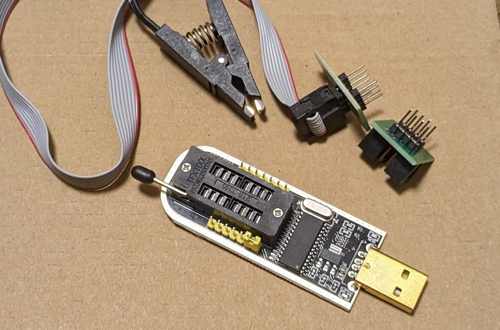
届いたROMライター
必要なソフトはつぎのとおり
- ドライバ
- 書き込み＆読み込みソフト
- BIOSの固有情報をコピーするソフト
わたしはドライバと書き込みソフトが同梱されている
NeoProgrammerを使いました。
BIOSの固有情報をコピーするソフトは、ASUSのマザーボードの場合に必要らしいです。
※参考：
CH341Aを用いたBIOS修復方法
☆2024-02-17 追記☆
ROMライターを使わずラズパイでもできるらしい。
やりかた
本当はここに詳細なROM焼き方法を書こうと思ってましたが、めちゃ長くなる&時間がないので、今のところは参考サイトを貼っておきます。
CH341Aを使ってBIOSの書き換えを行う
CH341AでASRockマザーのBIOS書き換えた件
簡単には次の流れです。
- メーカーのサイトから正常なBIOSファイルをダウンロードする
- 機器を正常なPCとUSB接続する
- マザーボード上のROM ICを付属のクリップで挟むか、取り外し直接機器に接続する
- 書き込みソフトで現状のデータを吸いだし保存する
- ROM ICの中身を全消去する(忘れがち)
- (BIOSの固有情報をコピぺする)
- 正常なBIOSファイルを書き込む
- 動作確認する
この方法で復活させたあと、メーカーのサイトからBIOS更新ツールをダウンロードしてきて正規の方法で上書きしとくと安心です。
4.実践編 ①マザーボード(起動不可)
実際に修理した例をいくつか紹介します。
1つ目は起動不可能なマザーボードです。
症状はCPUピン曲がり、パターン切れ、BIOS起動不可(?)、けっこうひどいですね。
ピン曲がり
ピン曲がりは赤で囲ったところが180°反対向いてます、なんで？
ピンセットでちまちま直します。
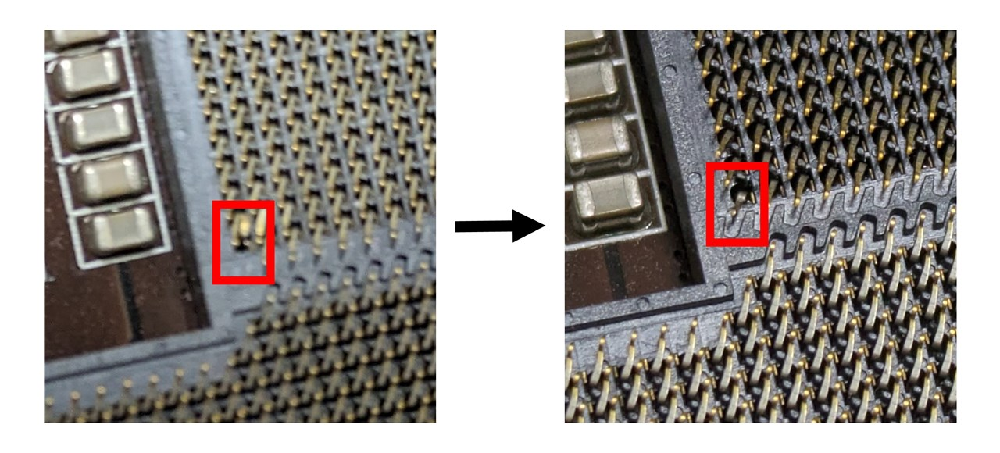
CPUのピン曲がりの様子 画像見にくくてごめんなさい
パターン切れ
パターン切れも修理します。
切れているのはメモリにつながるところらしくて、全スロットのうち2/4しか認識しませんでした。
コーティングを削ってはがし、はんだ付けで修理しちゃいました。
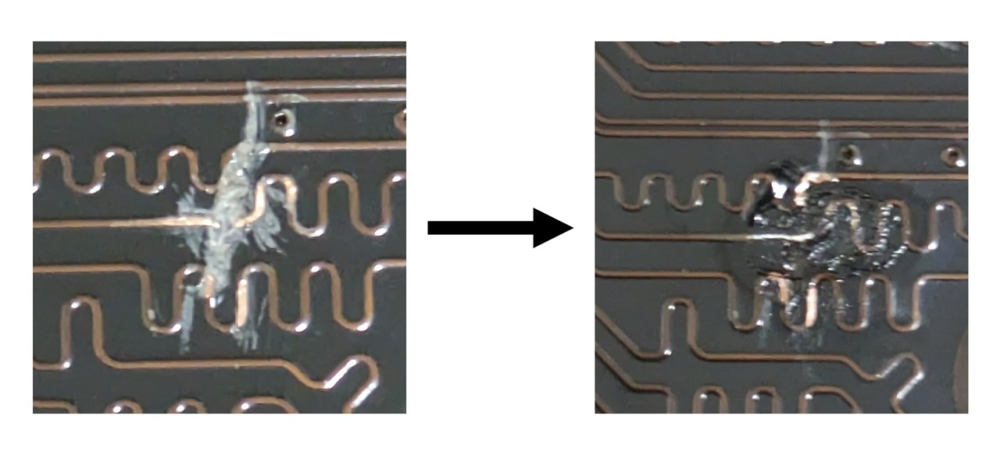
パターン切れをはんだ付けで無理やり修理
※1 切れているのは1本なのに2スロット使えなくなるのなんでだろ。チャネルの問題？
※2 このへんの回路設計は複雑で、電子の速度とかを考えられているらしい。なのでつながればいいってものではないです。まあ結果動いたからヨシ！
ROM焼き
やっと本題のROM焼きです。ここまでの修理で直るかなとおもってましたが、やっぱりBIOSも死んでるみたいです。電源は入りますが、画面に何もうつりません。
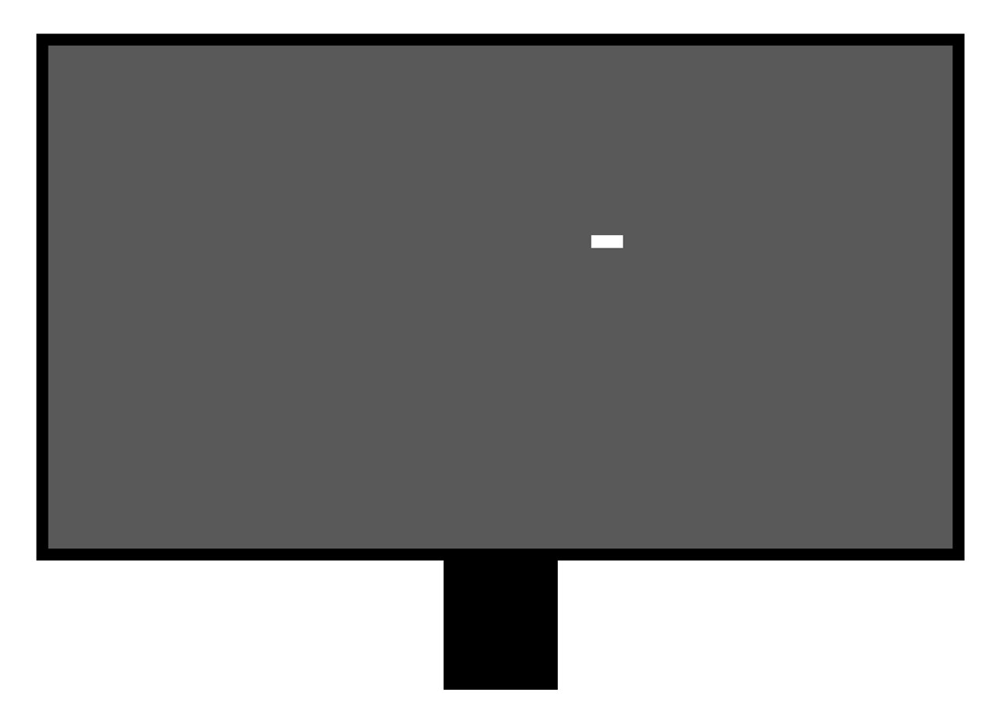
画面の一部分だけ謎の点がある状態
マザーボード上のROM ICをクリップで挟み、正常なBIOSファイルを書き込みます。
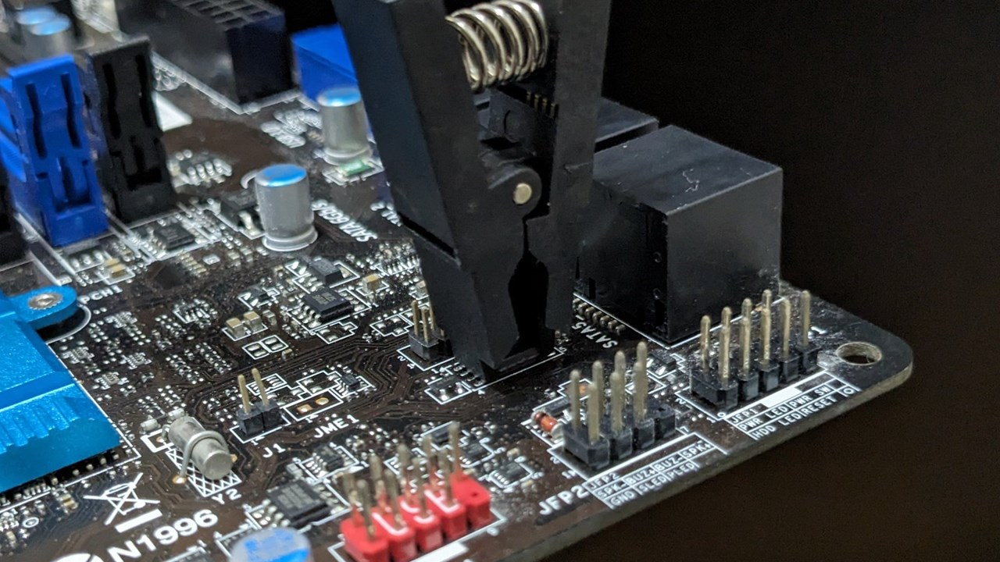
ROM焼き中
BIOSの書き込みに成功し、電源を入れてみると…
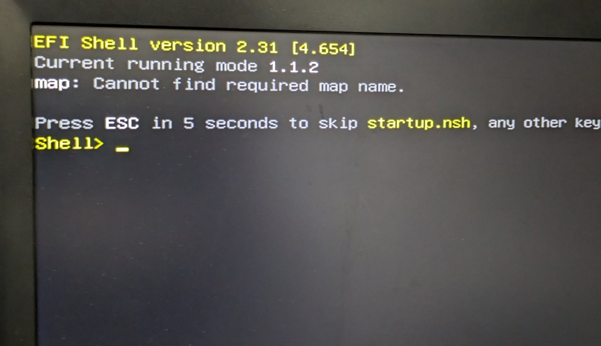
EFI Shellが起動した
ここまでくれば勝ちですね。
exitと入力し再起動すると
BIOS画面が表示されました。やったね！
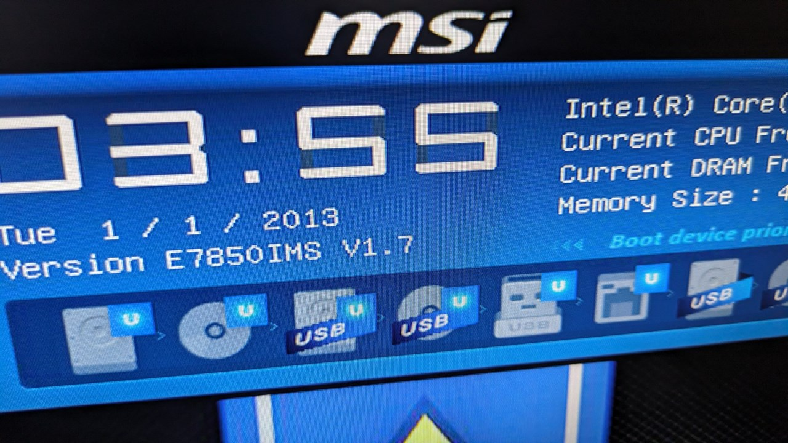
BIOS(UEFI)画面が表示された
日時はおかしいですが、OS入れれば勝手に設定してくれます。
試しにwindowsを入れてみたところ、
正常に動作しました！
これで修理完了です！
5.実践編 ②マザーボード(CPUの世代違い)
次は修理というよりは改造に近いかも？
intel製CPUは世代が違っても同じマザーボード(チップセット)が流用できるものがあります。今回のB150マザーボードは、intel第6,7世代に対応しています。
ただ、第6世代の発売時に設計されたマザーボードはそのままでは第7世代CPUが使えません。BIOSアップデートをすると使えるようになります。
ただ、BIOSアップデートをするには第6世代のCPUが必要です。
※かしこいマザーボードはCPUなしでもできたりする、もしかしたらこのマザーボードもできたかもしれない
残念ながらこの時は第6世代のCPUが手元になかったので、無理やりROM焼きをすることで対応しました。
今回のマザーボードはわりと新しめなので、ROM ICが取り外せるようになってます。ICごと交換してしまうのも1つの手かも。
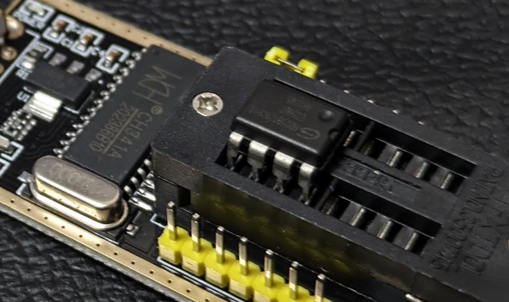
クリップを使わないROM焼き
正常にROM焼きでき、正常に起動できました。
ハードオフで1000円で拾ってきたマザーボードですが、ふつうに使えました。
6.実践編 ③4Kモニタ(電源が入らない)
ROM ICがついていて、それが壊れているのが原因であれば、マザーボードに限らず修理が可能です。
偶然入手した電源が入らない4Kモニタ、ちょっと調べてみるとROMのせいで起動しなくなることがわりとあるらしいです。
参考サイト→
参考サイト
ROMを書き直せば直りそうですね。
ROM ICに触るために、マイナスドライバーやプラスチックのヘラでがんばって(工研の部員数人に手伝ってもらいながら)、モニタの裏蓋を外します。
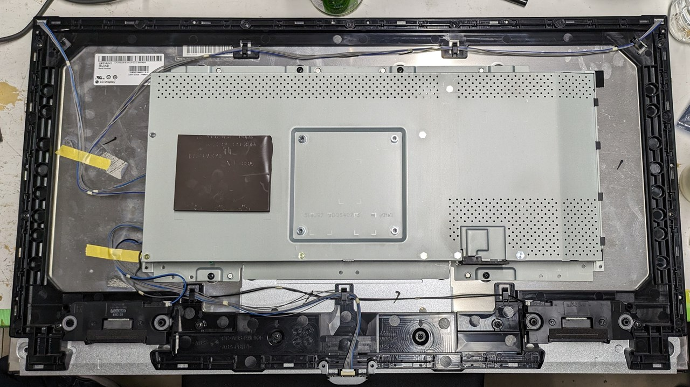
裏蓋を外したところ
ねじを外し、メイン基板(画像左側)に触れるようにします。赤枠で囲んだ部分にROM ICがあるので、クリップで挟んでROM焼きをします。
右側の基板は電源系統なので下手にいじらないほうがいいと思います。
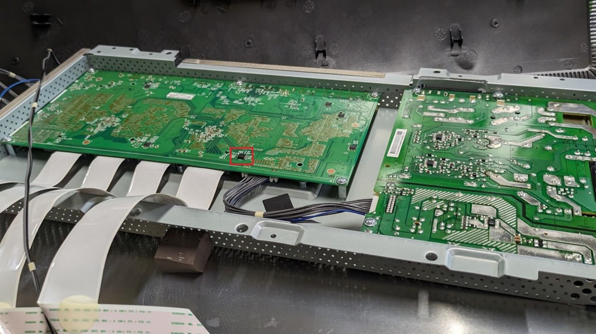
メイン基板とご対面
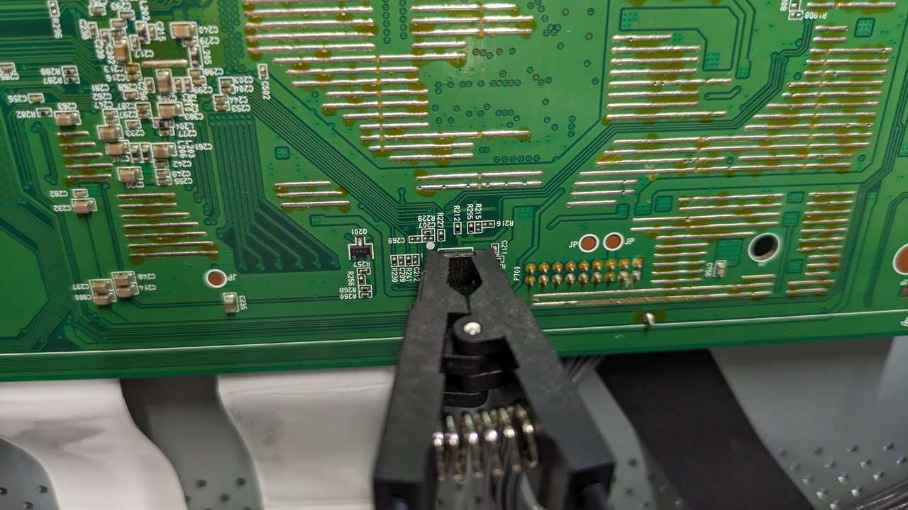
恒例のROM焼き
上手に焼ければ修理成功です！ビープ音がなり、映像、音声の出力ができるようになりました!!
めちゃ喜んでますね。最初に表示したのはtwitterだったようです。4Kのきれいさが伝わらない😢
7.おわりに
さいごまで読んでいただきありがとうございました！
修理の中では簡単な部類だと思うので、ぜひ挑戦してみてください。誰かの参考になればうれしいです。
Advent Calendar大遅刻ですみませんでした…